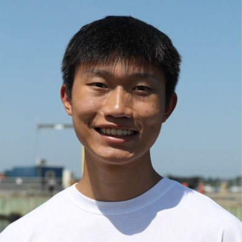
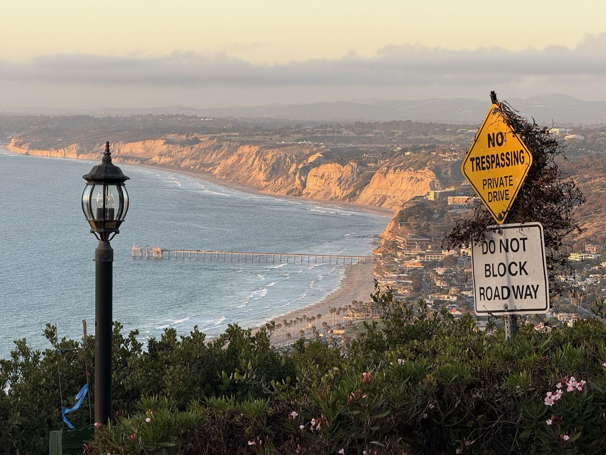
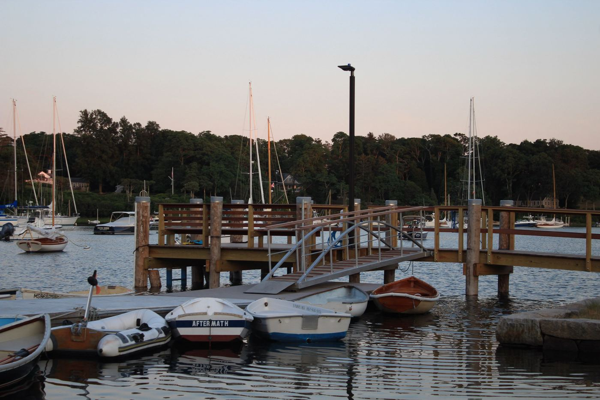
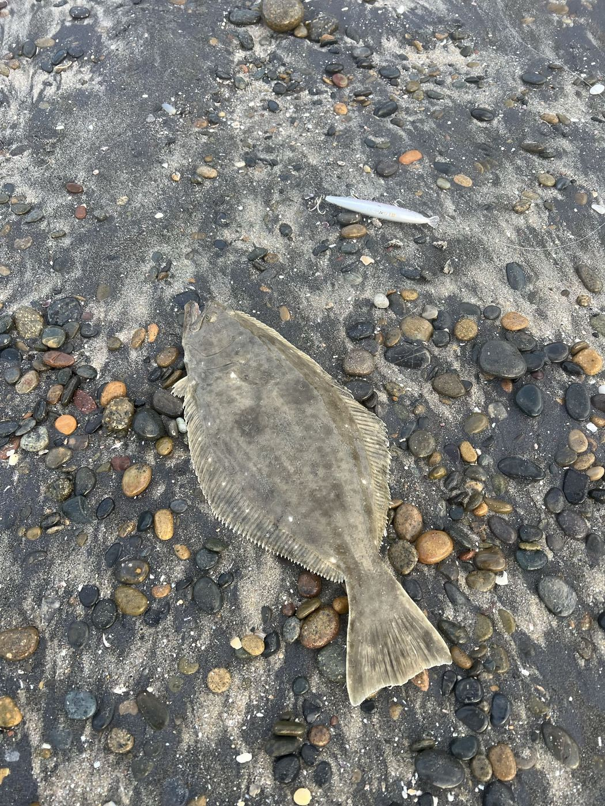
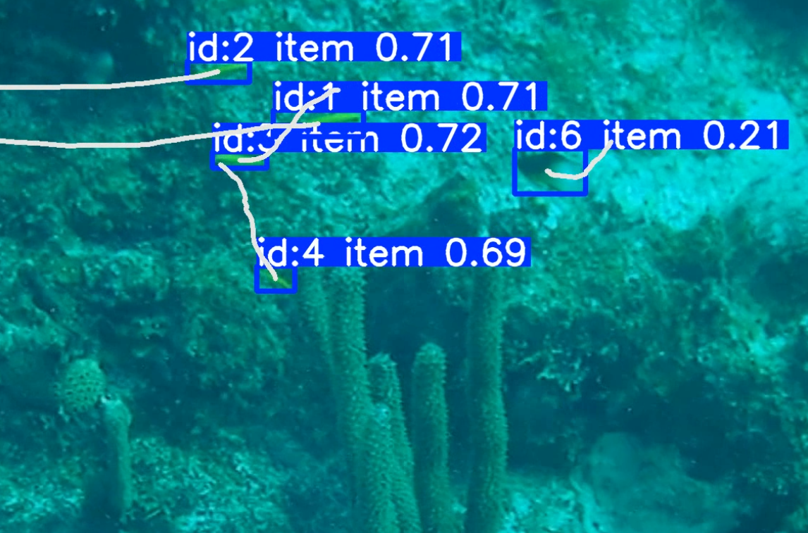
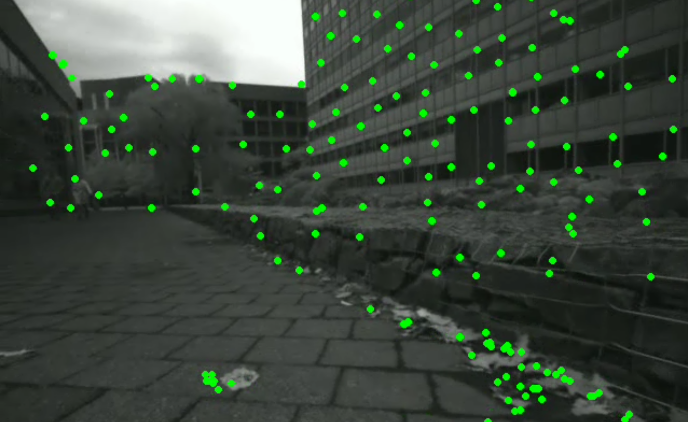
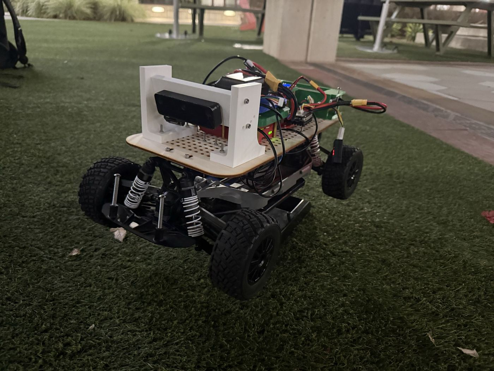
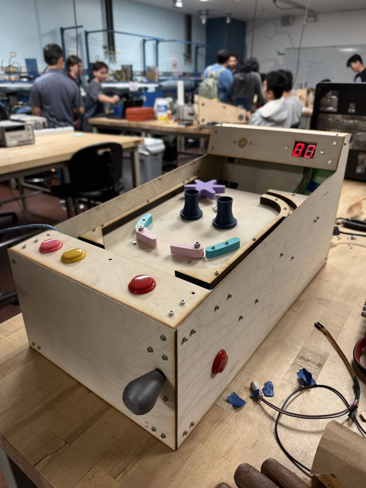

<title>Jasper Ha</title>
<meta name="description" content="Graduate researcher in robotics and ocean acoustics at Scripps Institution of Oceanography.">
<meta property="og:title" content="Jasper Ha">
<meta property="og:description" content="Graduate researcher in robotics and ocean acoustics at Scripps Institution of Oceanography.">
<meta property="og:image" content="images/sea-stacks.jpg">
<meta property="og:type" content="website">
<meta name="twitter:card" content="summary_large_image">
<link rel="icon" href="data:image/svg+xml,%3Csvg xmlns='http://www.w3.org/2000/svg' viewBox='0 0 64 64'%3E%3Crect width='64' height='64' rx='12' fill='%230f4650'/%3E%3Cpath d='M6 40c5 0 5-6 10-6s5 6 10 6 5-6 10-6 5 6 10 6 5-6 10-6' fill='none' stroke='%235cd3c4' stroke-width='4' stroke-linecap='round'/%3E%3Cpath d='M6 50c5 0 5-6 10-6s5 6 10 6 5-6 10-6 5 6 10 6 5-6 10-6' fill='none' stroke='%23b96b31' stroke-width='4' stroke-linecap='round' opacity='.75'/%3E%3Ccircle cx='32' cy='20' r='6' fill='%235cd3c4'/%3E%3C/svg%3E">
<link rel="preconnect" href="https://fonts.googleapis.com">
<link rel="preconnect" href="https://fonts.gstatic.com" crossorigin>
<link rel="stylesheet" href="https://fonts.googleapis.com/css2?family=Fraunces:ital,opsz,wght@0,9..144,340;0,9..144,470;0,9..144,600;1,9..144,470&family=Public+Sans:wght@400;500;600&family=IBM+Plex+Mono:wght@400;500&display=swap">
<style>
  :root{
    --bg:#f6f9f8;
    --bg-deep:#eef4f2;
    --panel:#ffffff;
    --ink:#0e2a2d;
    --ink-soft:#4d6669;
    --line:#cfdcd9;
    --line-soft:#e3ece9;
    --accent:#1c6e7a;
    --accent-ink:#0f4650;
    --accent-soft:#e5f1f0;
    --accent2:#b96b31;
    --shadow: 0 1px 2px rgba(14,42,45,.04), 0 8px 24px -12px rgba(14,42,45,.18);
  }
  @media (prefers-color-scheme: dark){
    :root:not([data-theme="light"]){
      --bg:#071518;
      --bg-deep:#0a1e21;
      --panel:#0d262a;
      --ink:#dfeeec;
      --ink-soft:#9ab5b3;
      --line:#1e3d40;
      --line-soft:#152e31;
      --accent:#5cd3c4;
      --accent-ink:#8fe7db;
      --accent-soft:#0f3236;
      --accent2:#e8975a;
      --shadow: 0 1px 2px rgba(0,0,0,.3), 0 8px 28px -12px rgba(0,0,0,.5);
    }
  }
  :root[data-theme="dark"]{
    --bg:#071518;
    --bg-deep:#0a1e21;
    --panel:#0d262a;
    --ink:#dfeeec;
    --ink-soft:#9ab5b3;
    --line:#1e3d40;
    --line-soft:#152e31;
    --accent:#5cd3c4;
    --accent-ink:#8fe7db;
    --accent-soft:#0f3236;
    --accent2:#e8975a;
    --shadow: 0 1px 2px rgba(0,0,0,.3), 0 8px 28px -12px rgba(0,0,0,.5);
  }

  *{box-sizing:border-box;}
  html{scroll-behavior:smooth;}
  @media (prefers-reduced-motion: reduce){
    html{scroll-behavior:auto;}
  }
  body{
    margin:0;
    background:var(--bg);
    color:var(--ink);
    font-family:'Public Sans', -apple-system, BlinkMacSystemFont, "Segoe UI", sans-serif;
    font-size:16px;
    line-height:1.65;
    -webkit-font-smoothing:antialiased;
  }
  h1,h2,h3{
    font-family:'Fraunces', Georgia, serif;
    text-wrap:balance;
    margin:0;
    color:var(--ink);
  }
  a{color:var(--accent-ink);}
  .mono{
    font-family:'IBM Plex Mono', ui-monospace, SFMono-Regular, Menlo, monospace;
  }
  .label{
    font-family:'IBM Plex Mono', ui-monospace, monospace;
    font-size:.72rem;
    letter-spacing:.11em;
    text-transform:uppercase;
    color:var(--ink-soft);
  }
  .wrap{max-width:1080px; margin:0 auto; padding:0 28px;}
  section{padding:88px 0;}
  section + section{border-top:1px solid var(--line-soft);}

  /* ---------- nav ---------- */
  nav{
    position:sticky; top:0; z-index:20;
    background:color-mix(in srgb, var(--bg) 86%, transparent);
    backdrop-filter:blur(10px);
    border-bottom:1px solid var(--line-soft);
  }
  nav .wrap{
    display:flex; align-items:center; justify-content:space-between;
    padding-top:14px; padding-bottom:14px;
  }
  .mark{
    display:flex; align-items:center; gap:10px;
    font-family:'IBM Plex Mono', monospace;
    font-size:.82rem; letter-spacing:.04em;
    color:var(--ink);
    text-decoration:none;
  }
  .mark .ping{
    width:9px; height:9px; border-radius:50%;
    background:var(--accent);
    box-shadow:0 0 0 3px var(--accent-soft);
    flex:none;
  }
  .navlinks{display:flex; gap:28px; list-style:none; margin:0; padding:0;}
  .navlinks a{
    color:var(--ink-soft); text-decoration:none;
    font-size:.86rem; font-weight:500;
    border-bottom:1px solid transparent;
    padding-bottom:2px;
    transition:color .15s ease, border-color .15s ease;
  }
  .navlinks a:hover{color:var(--ink); border-color:var(--accent);}

  /* ---------- hero ---------- */
  .hero{
    padding-top:96px; padding-bottom:80px; border-top:none;
    position:relative;
    background-image:
      linear-gradient(180deg, rgba(4,14,16,.62) 0%, rgba(4,14,16,.5) 45%, rgba(4,14,16,.82) 100%),
      url('images/sea-stacks.jpg');
    background-size:cover;
    background-position:center 60%;
    color:#fff;
  }
  .hero .eyebrow{color:rgba(255,255,255,.8);}
  .eyebrow{
    display:inline-flex; align-items:center; gap:8px;
    margin-bottom:22px;
  }
  .eyebrow::before{
    content:""; width:22px; height:1px; background:var(--accent2);
  }
  h1.name{
    font-size:clamp(2.7rem, 3.4vw + 1.6rem, 4.4rem);
    font-weight:600;
    line-height:1.03;
    letter-spacing:-.01em;
    color:#fff;
  }
  .role{
    margin-top:14px;
    font-size:clamp(1.05rem, .4vw + 1rem, 1.25rem);
    color:rgba(255,255,255,.88);
    font-weight:500;
    max-width:44ch;
  }
  .coord-line{
    margin-top:6px;
    font-size:.82rem;
    color:rgba(255,255,255,.62);
    letter-spacing:.03em;
  }
  .bio{
    margin-top:22px;
    max-width:62ch;
    font-size:1.03rem;
    color:rgba(255,255,255,.94);
  }
  .cta-row{
    margin-top:30px;
    display:flex; flex-wrap:wrap; gap:12px;
  }
  .btn{
    display:inline-flex; align-items:center; gap:8px;
    padding:10px 18px;
    border-radius:3px;
    font-size:.9rem; font-weight:500;
    text-decoration:none;
    border:1px solid rgba(255,255,255,.45);
    color:#fff;
    background:rgba(8,20,22,.35);
    backdrop-filter:blur(3px);
    transition:border-color .15s ease, background .15s ease, transform .15s ease;
  }
  .btn.primary{
    background:var(--accent); border-color:var(--accent); color:#04191b;
  }
  .btn:hover{transform:translateY(-1px); border-color:#fff; background:rgba(8,20,22,.55);}
  .btn.primary:hover{background:var(--accent-ink);}


  /* ---------- about ---------- */
  .about-grid{
    display:grid;
    grid-template-columns:260px 1fr;
    gap:56px;
    align-items:start;
  }
  .id-card{
    border:1px solid var(--line);
    border-radius:6px;
    padding:22px;
    background:var(--panel);
    box-shadow:var(--shadow);
  }
  .monogram{
    width:74px; height:74px;
    border-radius:50%;
    border:1.5px solid var(--accent);
    display:flex; align-items:center; justify-content:center;
    font-family:'Fraunces', serif; font-size:1.5rem; font-weight:600;
    color:var(--accent-ink);
    margin-bottom:18px;
    position:relative;
  }
  .monogram::after{
    content:""; position:absolute; inset:-7px;
    border-radius:50%; border:1px solid var(--line);
  }
  .facts{list-style:none; margin:0; padding:0; display:flex; flex-direction:column; gap:14px;}
  .facts li{display:flex; flex-direction:column; gap:3px;}
  .facts .v{font-size:.88rem; color:var(--ink);}
  h2{
    font-size:clamp(1.5rem, 1vw + 1.1rem, 1.9rem);
    font-weight:600;
    margin-bottom:8px;
  }
  .section-head{margin-bottom:40px;}
  .section-sub{color:var(--ink-soft); font-size:.95rem; max-width:56ch; margin-top:6px;}
  .about-text p{max-width:64ch;}
  .about-text p + p{margin-top:16px;}

  /* ---------- research ---------- */
  .cards{
    display:grid;
    grid-template-columns:repeat(3, 1fr);
    gap:20px;
  }
  .card{
    border:1px solid var(--line);
    border-radius:6px;
    background:var(--panel);
    padding:24px;
    box-shadow:var(--shadow);
    display:flex; flex-direction:column; gap:14px;
  }
  .glyph{color:var(--accent);}
  .card h3{font-size:1.08rem; font-weight:600;}
  .card .org{color:var(--ink-soft); font-size:.78rem; margin-top:4px;}
  .card p{font-size:.92rem; color:var(--ink); margin:0;}
  .tags{display:flex; flex-wrap:wrap; gap:6px; margin-top:auto; padding-top:6px;}
  .tag{
    font-family:'IBM Plex Mono', monospace;
    font-size:.68rem; letter-spacing:.02em;
    padding:3px 8px;
    border-radius:3px;
    background:var(--accent-soft);
    color:var(--accent-ink);
  }

  /* ---------- publications / cv (log style) ---------- */
  .log-groups{display:flex; flex-direction:column; gap:34px;}
  .log-group .label{margin-bottom:12px; display:block;}
  .log-row{
    display:grid;
    grid-template-columns:150px 1fr;
    gap:18px;
    padding:12px 0;
    border-top:1px solid var(--line-soft);
  }
  .log-row:last-child{border-bottom:1px solid var(--line-soft);}
  .log-date{font-family:'IBM Plex Mono', monospace; font-size:.78rem; color:var(--ink-soft); padding-top:2px;}
  .log-title{font-weight:600; font-size:.98rem;}
  .log-detail{color:var(--ink-soft); font-size:.88rem; margin-top:2px;}
  .chip-cloud{display:flex; flex-wrap:wrap; gap:8px; margin-top:14px;}
  .chip{
    font-family:'IBM Plex Mono', monospace;
    font-size:.76rem;
    padding:5px 11px;
    border:1px solid var(--line);
    border-radius:20px;
    color:var(--ink);
  }
  .pub-groups{display:grid; grid-template-columns:1.3fr 1fr; gap:56px; margin-top:8px;}

  /* ---------- contact ---------- */
  .contact-list{
    list-style:none; margin:0; padding:0;
    max-width:420px;
    display:flex; flex-direction:column; gap:16px;
  }
  .contact-list a{
    display:flex; align-items:baseline; gap:12px;
    text-decoration:none; color:var(--ink);
    font-size:1.02rem;
    padding-bottom:10px;
    border-bottom:1px solid var(--line-soft);
    transition:color .15s ease, border-color .15s ease;
  }
  .contact-list a:hover{color:var(--accent-ink); border-color:var(--accent);}
  .contact-list .k{font-family:'IBM Plex Mono', monospace; font-size:.72rem; color:var(--ink-soft); width:70px; flex:none;}

  footer{
    border-top:1px solid var(--line-soft);
    padding:26px 0 40px;
  }
  footer .wrap{
    display:flex; justify-content:space-between; align-items:center; flex-wrap:wrap; gap:10px;
  }
  footer .mono{font-size:.76rem; color:var(--ink-soft);}

  .reveal{
    opacity:1; transform:none;
  }

  .avatar{
    width:84px; height:84px;
    border-radius:50%;
    border:1.5px solid var(--accent);
    object-fit:cover;
    display:block;
    margin-bottom:18px;
    position:relative;
  }
  .avatar-wrap{position:relative; width:84px; height:84px; margin-bottom:18px;}
  .avatar-wrap .avatar{margin-bottom:0;}
  .avatar-wrap::after{
    content:""; position:absolute; inset:-7px;
    border-radius:50%; border:1px solid var(--line);
  }

  /* personal photo slider + hobbies */
  .hobbies{margin-top:16px;}
  .slider{
    margin-top:32px;
    border:1px solid var(--line);
    border-radius:6px;
    background:var(--panel);
    box-shadow:var(--shadow);
    overflow:hidden;
  }
  .slider-track{position:relative; width:100%; aspect-ratio:4/3;}
  .slide{
    position:absolute; inset:0;
    opacity:0;
    transition:opacity .7s ease;
  }
  .slide.active{opacity:1;}
  .slide img{width:100%; height:100%; object-fit:cover; display:block;}
  .slide figcaption{
    position:absolute; left:0; right:0; bottom:0;
    padding:26px 16px 12px;
    font-size:.82rem; color:#f4f8f7;
    background:linear-gradient(to top, rgba(6,18,20,.72), transparent);
  }
  .slider-nav{
    display:flex; align-items:center; justify-content:center; gap:8px;
    padding:12px;
    background:var(--bg-deep);
  }
  .slider-dot{
    width:7px; height:7px; border-radius:50%;
    background:var(--line);
    border:none; padding:0; cursor:pointer;
    transition:background .15s ease, transform .15s ease;
  }
  .slider-dot.active{background:var(--accent); transform:scale(1.2);}
  .slider-dot:hover{background:var(--accent-ink);}

  .music-panel{
    margin-top:36px;
    border:1px solid var(--line);
    border-radius:6px;
    background:var(--panel);
    box-shadow:var(--shadow);
    padding:20px;
  }
  .music-panel .label{margin-bottom:4px;}
  .music-sub{color:var(--ink-soft); font-size:.82rem; margin-bottom:16px;}
  .track-list{
    list-style:none; margin:0; padding:0;
    display:grid; grid-template-columns:1fr 1fr; gap:14px 20px;
  }
  .track-embed iframe{
    display:block; width:100%; border-radius:10px;
    background:var(--bg-deep);
  }

  .music-panel{padding:0;}
  .music-panel summary{
    list-style:none; cursor:pointer;
    padding:16px 20px;
    display:flex; align-items:center; justify-content:space-between; gap:12px;
  }
  .music-panel summary::-webkit-details-marker{display:none;}
  .music-panel summary .label{margin-bottom:0;}
  .music-panel summary .toggle-hint{
    font-size:.78rem; color:var(--ink-soft);
    display:flex; align-items:center; gap:6px;
  }
  .music-panel summary .toggle-hint .chev{
    display:inline-block; transition:transform .2s ease;
    font-family:'IBM Plex Mono', monospace;
  }
  .music-panel[open] summary .toggle-hint .chev{transform:rotate(180deg);}
  .music-panel .music-body{padding:0 20px 20px;}

  /* ---------- research media cards ---------- */
  .card{padding:0;}
  .card-media{
    height:150px;
    background:var(--accent-soft);
    display:flex; align-items:center; justify-content:center;
    border-radius:6px 6px 0 0;
    overflow:hidden;
  }
  .card-media img{width:100%; height:100%; object-fit:cover; display:block;}
  .card-body{padding:22px; display:flex; flex-direction:column; gap:12px; flex:1;}
  .card-links{display:flex; flex-wrap:wrap; gap:4px 16px; font-family:'IBM Plex Mono', monospace; font-size:.76rem;}
  .card-links a{color:var(--accent-ink); text-decoration:none; border-bottom:1px solid transparent;}
  .card-links a:hover{border-color:var(--accent-ink);}

  @media (max-width:820px){
    .about-grid, .pub-groups{grid-template-columns:1fr;}
    .cards{grid-template-columns:1fr;}
    .track-list{grid-template-columns:1fr;}
    .navlinks{gap:16px;}
    .navlinks a{font-size:.8rem;}
    section{padding:60px 0;}
  }
</style>

<nav>
  <div class="wrap">
    <a class="mark" href="#top"><span class="ping"></span>J. HA</a>
    <ul class="navlinks">
      <li><a href="#about">About</a></li>
      <li><a href="#research">Research</a></li>
      <li><a href="#cv">CV</a></li>
      <li><a href="#contact">Contact</a></li>
    </ul>
  </div>
</nav>

<main id="top">
  <section class="hero">
    <div class="wrap">
      <div class="label eyebrow">Graduate Researcher — Ocean Robotics &amp; Acoustics</div>
      <h1 class="name">Jasper Ha</h1>
      <p class="role">Scripps Institution of Oceanography · UC San Diego Jacobs School of Engineering</p>
      <p class="role coord-line mono">32.8656° N, 117.2545° W</p>
      <p class="bio">I work on the perception side of ocean science — turning sonar, imagery, and sensor streams from autonomous vehicles into maps and detections that biologists and oceanographers can use.</p>
      <div class="cta-row">
        <a class="btn primary" href="mailto:jyha@ucsd.edu">Email me</a>
        <a class="btn" href="https://github.com/jaspyha/" target="_blank" rel="noopener">GitHub ↗</a>
        <a class="btn" href="https://www.linkedin.com/in/jasper-ha/" target="_blank" rel="noopener">LinkedIn ↗</a>
        <a class="btn" href="#research">See research ↓</a>
      </div>
    </div>
  </section>

  <section id="about">
    <div class="wrap">
      <div class="section-head reveal">
        <div class="label">01 — About</div>
        <h2>Working at the surface between robotics and the ocean</h2>
      </div>
      <div class="about-grid reveal">
        <div class="id-card">
          <div class="avatar-wrap">
            
          </div>
          <ul class="facts">
            <li><span class="label">Location</span><span class="v">La Jolla, CA</span></li>
            <li><span class="label">Program</span><span class="v">M.S. ECE — Intelligent Systems, Robotics &amp; Control, UC San Diego</span></li>
            <li><span class="label">Lab</span><span class="v">Coastal Observing Research &amp; Development Center, Scripps</span></li>
            <li><span class="label">Focus</span><span class="v">Underwater perception, sonar processing, marine robotics</span></li>
          </ul>
        </div>
        <div class="about-text">
          <p>I'm a graduate student researcher at the Scripps Institution of Oceanography's Coastal Observing Research &amp; Development Center. I completed my B.S. in Computer Engineering at UC San Diego in 2026 and am now pursuing an M.S. in Intelligent Systems, Robotics &amp; Control at the Jacobs School of Engineering.</p>
          <p>Before Scripps, I spent a summer at Woods Hole Oceanographic Institution's WARPLab building visual detection and tracking pipelines for coral reef fish, and two years designing mechanical systems for collegiate robotics competitions. My work sits at the intersection of robotics, computer vision, and oceanography — from SLAM and autonomous vehicles to tracking fish across reef video.</p>
          <p class="hobbies">Outside the lab, I'm usually running, fishing, or dancing — hip-hop/breaking, Afro-Cuban, salsa/bachata. Most weekends I'm out exploring the California backcountry coastline and forests.</p>

          <div class="slider" id="photo-slider">
            <div class="slider-track">
              <figure class="slide active">
                
                <figcaption>Terminal velocity, tandem jump over Oahu</figcaption>
              </figure>
              <figure class="slide">
                
                <figcaption>Exploring the Sonoma coastline</figcaption>
              </figure>
              <figure class="slide">
                
                <figcaption>The photographer is the photo</figcaption>
              </figure>
              <figure class="slide">
                
                <figcaption>Golden hour over La Jolla</figcaption>
              </figure>
              <figure class="slide">
                
                <figcaption>The Knob at Woods Hole, MA</figcaption>
              </figure>
              <figure class="slide">
                
                <figcaption>California Halibut</figcaption>
              </figure>
            </div>
            <div class="slider-nav">
              <button class="slider-dot active" data-i="0" aria-label="Show slide 1"></button>
              <button class="slider-dot" data-i="1" aria-label="Show slide 2"></button>
              <button class="slider-dot" data-i="2" aria-label="Show slide 3"></button>
              <button class="slider-dot" data-i="3" aria-label="Show slide 4"></button>
              <button class="slider-dot" data-i="4" aria-label="Show slide 5"></button>
              <button class="slider-dot" data-i="5" aria-label="Show slide 6"></button>
            </div>
          </div>

          <details class="music-panel">
            <summary>
              <span class="label">On repeat</span>
              <span class="toggle-hint">A few songs I vibe or dance to <span class="chev">▾</span></span>
            </summary>
            <div class="music-body">
              <div class="track-list">
                <div class="track-embed">
                  <iframe src="https://open.spotify.com/embed/track/6u0x5ad9ewHvs3z6u9Oe3c?utm_source=generator&theme=0" width="100%" height="80" frameborder="0" allowfullscreen="" allow="autoplay; clipboard-write; encrypted-media; fullscreen; picture-in-picture" loading="lazy" title="Under Cover of Darkness on Spotify"></iframe>
                </div>
                <div class="track-embed">
                  <iframe src="https://open.spotify.com/embed/track/0fTClXYgyFSAsNHf7NQVrK?utm_source=generator&theme=0" width="100%" height="80" frameborder="0" allowfullscreen="" allow="autoplay; clipboard-write; encrypted-media; fullscreen; picture-in-picture" loading="lazy" title="Bass Player's Brother on Spotify"></iframe>
                </div>
                <div class="track-embed">
                  <iframe src="https://open.spotify.com/embed/track/00829N8kbRmuLpppY407Qb?utm_source=generator&theme=0" width="100%" height="80" frameborder="0" allowfullscreen="" allow="autoplay; clipboard-write; encrypted-media; fullscreen; picture-in-picture" loading="lazy" title="Eat That Up, It's Good for You on Spotify"></iframe>
                </div>
                <div class="track-embed">
                  <iframe src="https://open.spotify.com/embed/track/6dIIwvSCxyixY2y9vJmyVg?utm_source=generator&theme=0" width="100%" height="80" frameborder="0" allowfullscreen="" allow="autoplay; clipboard-write; encrypted-media; fullscreen; picture-in-picture" loading="lazy" title="Monochromatic on Spotify"></iframe>
                </div>
                <div class="track-embed">
                  <iframe src="https://open.spotify.com/embed/track/5dIz2Q54yzcvyiXHRnvj4C?utm_source=generator&theme=0" width="100%" height="80" frameborder="0" allowfullscreen="" allow="autoplay; clipboard-write; encrypted-media; fullscreen; picture-in-picture" loading="lazy" title="Trying to Feel Alive on Spotify"></iframe>
                </div>
                <div class="track-embed">
                  <iframe src="https://open.spotify.com/embed/track/5o3LSzu8xCMDpbAwm4dZ46?utm_source=generator&theme=0" width="100%" height="80" frameborder="0" allowfullscreen="" allow="autoplay; clipboard-write; encrypted-media; fullscreen; picture-in-picture" loading="lazy" title="思想犯 on Spotify"></iframe>
                </div>
              </div>
            </div>
          </details>
        </div>
      </div>
    </div>
  </section>

  <section id="research">
    <div class="wrap">
      <div class="section-head reveal">
        <div class="label">02 — Research &amp; Projects</div>
        <h2>Selected work</h2>
        <p class="section-sub">Four projects spanning reef ecology, SLAM, and embedded controls.</p>
      </div>
      <div class="cards reveal">

        <article class="card">
          <div class="card-media"></div>
          <div class="card-body">
            <div>
              <h3>Coral Reef Fish Detection &amp; Tracking</h3>
              <div class="org mono">WHOI WARPLab · Jun–Aug 2025</div>
            </div>
            <p>Visual, species-level detection and tracking pipeline for Caribbean reef fish, built under Dr. Yogesh Girdhar at Woods Hole's Autonomous Robotics and Perception Lab.</p>
            <div class="card-links">
              <a href="https://ieeexplore.ieee.org/document/11374455" target="_blank" rel="noopener">Read the paper ↗</a>
            </div>
            <div class="tags">
              <span class="tag">PyTorch</span>
              <span class="tag">Object detection</span>
              <span class="tag">Computer vision</span>
            </div>
          </div>
        </article>

        <article class="card">
          <div class="card-media"></div>
          <div class="card-body">
            <div>
              <h3>Visual-Inertial SLAM</h3>
              <div class="org mono">Course project · March 2025</div>
            </div>
            <p>An EKF-based SLAM pipeline fusing IMU dead-reckoning prediction with stereo-camera landmark mapping to jointly estimate trajectory and map, with poses in SE(3).</p>
            <div class="card-links">
              <a href="docs/VI_SLAM.pdf" target="_blank" rel="noopener">Read the report (PDF) ↗</a>
            </div>
            <div class="tags">
              <span class="tag">EKF</span>
              <span class="tag">SLAM</span>
              <span class="tag">Stereo vision</span>
            </div>
          </div>
        </article>

        <article class="card">
          <div class="card-media"></div>
          <div class="card-body">
            <div>
              <h3>Autonomous RC Car &amp; AprilTag Turret</h3>
              <div class="org mono">UCSD ECE/MAE 148</div>
            </div>
            <p>A 1/10-scale RC car converted into a self-driving platform — onboard camera and Raspberry Pi closing the loop for autonomous lane-following. Later extended with a PID-aimed pan/tilt turret that tracks AprilTags via the same camera and fires a flywheel shooter.</p>
            <div class="card-links">
              <a href="https://youtu.be/nkoUXN9lsk8" target="_blank" rel="noopener">▶ Live autonomous laps</a>
              <a href="https://youtu.be/_GFO3bZok0Q" target="_blank" rel="noopener">▶ Simulator laps</a>
            </div>
            <div class="tags">
              <span class="tag">ROS / ROS2</span>
              <span class="tag">OpenCV</span>
              <span class="tag">Raspberry Pi</span>
              <span class="tag">Controls</span>
            </div>
          </div>
        </article>

        <article class="card">
          <div class="card-media"></div>
          <div class="card-body">
            <div>
              <h3>Pinball Machine</h3>
              <div class="org mono">Personal build</div>
            </div>
            <p>A coin-op-style pinball cabinet from scratch — laser-cut plywood body, arcade buttons, servo-driven bumpers and flippers, and a 7-segment scoreboard.</p>
            <div class="tags">
              <span class="tag">Embedded systems</span>
              <span class="tag">Mechanical design</span>
              <span class="tag">Fabrication</span>
            </div>
          </div>
        </article>

      </div>
    </div>
  </section>

  <section id="cv">
    <div class="wrap">
      <div class="section-head reveal">
        <div class="label">03 — CV Highlights</div>
        <h2>Log</h2>
      </div>
      <div class="pub-groups reveal">
        <div class="log-groups">
          <div class="log-group">
            <span class="label">Education</span>
            <div class="log-row">
              <div class="log-date mono">2026–2027</div>
              <div>
                <div class="log-title">M.S. Electrical &amp; Computer Engineering</div>
                <div class="log-detail">Intelligent Systems, Robotics &amp; Control — UC San Diego</div>
              </div>
            </div>
            <div class="log-row">
              <div class="log-date mono">2022–2026</div>
              <div>
                <div class="log-title">B.S. Computer Engineering</div>
                <div class="log-detail">UC San Diego — Regents Scholar, Booker Award recipient</div>
              </div>
            </div>
          </div>

          <div class="log-group">
            <span class="label">Experience</span>
            <div class="log-row">
              <div class="log-date mono">2026–present</div>
              <div>
                <div class="log-title">Graduate Student Researcher</div>
                <div class="log-detail">Scripps Institution of Oceanography — Coastal Observing R&amp;D Center, La Jolla</div>
              </div>
            </div>
            <div class="log-row">
              <div class="log-date mono">Jun–Aug 2025</div>
              <div>
                <div class="log-title">Research Fellow</div>
                <div class="log-detail">Woods Hole Oceanographic Institution — visual fish detection &amp; tracking</div>
              </div>
            </div>
            <div class="log-row">
              <div class="log-date mono">2022–2024</div>
              <div>
                <div class="log-title">Robotics Design Engineer</div>
                <div class="log-detail">Triton Robotics Inc. — mechanical CAD for BLDC-actuated systems</div>
              </div>
            </div>
          </div>
        </div>

        <div class="log-groups">
          <div class="log-group">
            <span class="label">Publication</span>
            <div class="log-row" style="grid-template-columns:1fr;">
              <div>
                <div class="log-title">Species-Level Detection and Tracking of Caribbean Coral Reef Fish</div>
                <div class="log-detail">Co-author · ICCVW 2025 — <a href="https://ieeexplore.ieee.org/document/11374455" target="_blank" rel="noopener">IEEE Xplore ↗</a></div>
              </div>
            </div>
          </div>

          <div class="log-group">
            <span class="label">Awards</span>
            <div class="log-row" style="grid-template-columns:1fr;">
              <div>
                <div class="log-title">Regents Scholar</div>
                <div class="log-detail">UC San Diego · 2022–2026</div>
              </div>
            </div>
            <div class="log-row" style="grid-template-columns:1fr;">
              <div>
                <div class="log-title">Booker Award</div>
                <div class="log-detail">UC San Diego · 2026</div>
              </div>
            </div>
            <div class="log-row" style="grid-template-columns:1fr;">
              <div>
                <div class="log-title">3rd Place, HackMIT</div>
                <div class="log-detail">2023 — honey-yield prediction for beekeepers</div>
              </div>
            </div>
          </div>

          <div class="log-group">
            <span class="label">Skills</span>
            <div class="chip-cloud">
              <span class="chip">ROS / ROS2</span>
              <span class="chip">PyTorch</span>
              <span class="chip">TensorFlow</span>
              <span class="chip">OpenCV</span>
              <span class="chip">SLAM</span>
              <span class="chip">EKF</span>
              <span class="chip">Stereo vision</span>
              <span class="chip">Underwater Acoustics</span>
              <span class="chip">Object Detection</span>
              <span class="chip">Autonomous Vehicles</span>
              <span class="chip">C++</span>
              <span class="chip">Docker</span>
              <span class="chip">GNSS</span>
              <span class="chip">SOLIDWORKS</span>
              <span class="chip">Onshape</span>
            </div>
          </div>
        </div>
      </div>
    </div>
  </section>

  <section id="contact">
    <div class="wrap">
      <div class="section-head reveal">
        <div class="label">04 — Contact</div>
        <h2>Get in touch</h2>
      </div>
      <div class="reveal">
        <ul class="contact-list">
          <li><a href="mailto:jyha@ucsd.edu"><span class="k mono">EMAIL</span> jyha@ucsd.edu</a></li>
          <li><a href="https://github.com/jaspyha/" target="_blank" rel="noopener"><span class="k mono">GITHUB</span> github.com/jaspyha</a></li>
          <li><a href="https://www.linkedin.com/in/jasper-ha/" target="_blank" rel="noopener"><span class="k mono">LINKEDIN</span> linkedin.com/in/jasper-ha</a></li>
        </ul>
      </div>
    </div>
  </section>

  <footer>
    <div class="wrap">
      <span class="mono">Jasper Ha — Graduate Researcher, Scripps Institution of Oceanography</span>
      <span class="mono">Built 2026</span>
    </div>
  </footer>
</main>

<script>
(function(){
  var root = document.getElementById('photo-slider');
  if (!root) return;
  var slides = root.querySelectorAll('.slide');
  var dots = root.querySelectorAll('.slider-dot');
  var reduced = window.matchMedia('(prefers-reduced-motion: reduce)').matches;
  var i = 0, timer = null;

  function show(n){
    i = (n + slides.length) % slides.length;
    slides.forEach(function(s, idx){ s.classList.toggle('active', idx === i); });
    dots.forEach(function(d, idx){ d.classList.toggle('active', idx === i); });
  }

  function restart(){
    if (timer) clearInterval(timer);
    if (!reduced) timer = setInterval(function(){ show(i + 1); }, 4500);
  }

  dots.forEach(function(d){
    d.addEventListener('click', function(){
      show(parseInt(d.getAttribute('data-i'), 10));
      restart();
    });
  });

  restart();
})();
</script>

